Adobe Audition不完整教程
背景
认识AU的历史
今年早些时候，入手了《Adobe Audition CC经典教程》这本书，打算系统的补充一下AU相关的知识。
认识AU不短，早在自己高二时代（距今11年了），就认识了，那时候还是3.0时代。那时候记得托付兄长在亚马逊（当时还是卓越）上买过教程书籍。
但是，由于那时候环境条件有限，没有办法延展开来学习。
直到上大学，有了自己个人的笔记本，那时候才算是弄了起来。
早在大一的时候，那时候还加入了学生会，哈哈哈。记得非常清楚，大一的迎新晚会，我是作为后台的音效师角色，负责整场晚会的前期音频、音效素材的收集，晚会现场后台音频的播放控制相关。也算是得益于早年很早接触AU相关后的一次实战吧。
现在认识的AU
工作这么多年了，现在日常生活中，着实对VLOG感兴趣，也入手了MAC，也有FinalCutPro这样优秀的视频剪辑工具有过了解。Windows平台的嘛，自然Adobe全家桶（Emm，我买不起正版，所以~你懂得）。
其中一个AU，也想重新拾起来，再系统的看看处理的细节相关，特别是一些特效啊，一些控制曲线啊什么的，都巩固一下吧。以前确实没有系统的学。
总体上，也算是多丰富一下个人的技能吧，也相信在日后自己做VLOG的时候，多少会用到一点。
正文开始~
环境
受各平台硬件环境因素相关，本文中处理相关时效均为个人WindowsPC工作环境下所得，详细环境如下：
- Au版本：Adobe Audition CC 2020(内部版本：13.0.0.519)
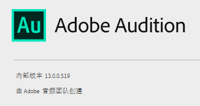 - Windows 10 Professional（版本：10.0.18363.778）
- CPU：Intel i9-9900ks
- 内存：32GB
教程相关
本章主要记录《Adobe Audition CC经典教程》这本书中记录的相关知识点，供后续自己查阅所用。
文中部分片段，是个人心得体会的，会加一个“注：”标记。
Audition操作环境
导航
媒体浏览器导航
- 在选中“媒体浏览器”面板之后，可以通过按英文的重音符号“`”快速最大化或者最小化窗口，以方便查看详细的媒体资源信息。
- 可以通过添加快捷键，快速打开资源文件夹：
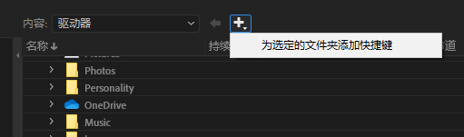 - “预览传输”可以快速预览资源文件
“媒体浏览器”面板右侧下拉菜单中，有这个选项。复选之后在下方的面板有个小喇叭，单击开启后，每次点“媒体浏览器”中的音频资源后，会自动播放，从而达到快速浏览的目的。如下图所示：
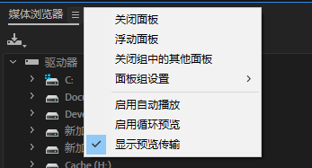
下拉菜单中还有其它几个选项
循环播放，就是预览的时候要不要循环播放。
自动播放，预览的时候是否自动播放
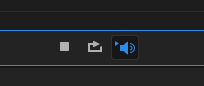
使用标记导航
位置：“窗口->标记”面板
通过选取指定音轨/指定范围时间下添加标记。达到快速导航的目的
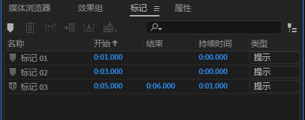
使用传输导航
位置：“窗口->传输”面板
与标记同时使用，配合传输的快捷键，可以快速切换标记点。
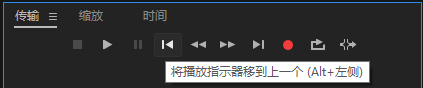
快捷键：ALT + 左右方向键（Windows平台）
编辑基础
使用Audition可以轻松地对音频文件进行剪切、复制、修饰、淡化以及其它操作。也可以放大音频文件进行精细化处理，与此同时还可以从顶部的总览窗口看到音频文件的全貌。
选择一个区域改变其电平
先来看一个demo截图：
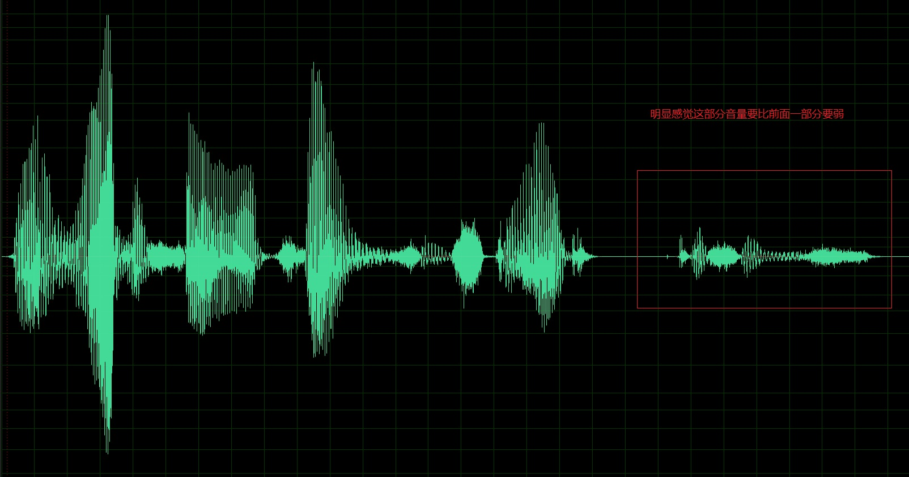
从上面截图中红色方框圈起来的这部分音频，明显音量要弱一点（音量大小，直观的可以从波形的宽幅体现）
此时我们鼠标左键选中这部分音频后，就像下图所示：
注意图中，多出来一个小Tip窗口，这个窗口叫：平视显示器（HUD），可以通过视图菜单下的“显示HUD”或者快捷键：${label primary@Shift + U%}，来控制这个显示器的显示与否
紧接着，可以通过在HUB窗口中的旋钮或者音量波形，旋动来改变音量大小
剪切过程
在定义一段波形的时候，如果截取的边界其电平值不是0，则在播放时可能引起卡塔声。如下图所示。
如果边界恰好穿过零点，即波形的电平值由正到负或者由负到正的位置。这种情况下没有明显的电平变化，所以不会有明显的咔嗒声。就像这样：
在AU中，“编辑->过零”菜单，可以让AU自动选择优化区域边界
多剪贴板应用
在AU中可以通过设置当前剪贴板，来实现同时剪贴多段文件的应用。
延长或缩短音乐选取
对齐功能
在菜单“编辑->对齐”下，有几个选项，这个对齐的主要功能是：使得在选择相邻标记间的音频时，标记具有模拟“磁场”的吸附功能，把靠近标记的选区边界直接吸附到标记处。
菜单如下所示：
默认情况下都是开启的，至少得：开启对齐功能和“对齐到标记”这两项，才会出现吸附的效果。具体演示如下图所示：
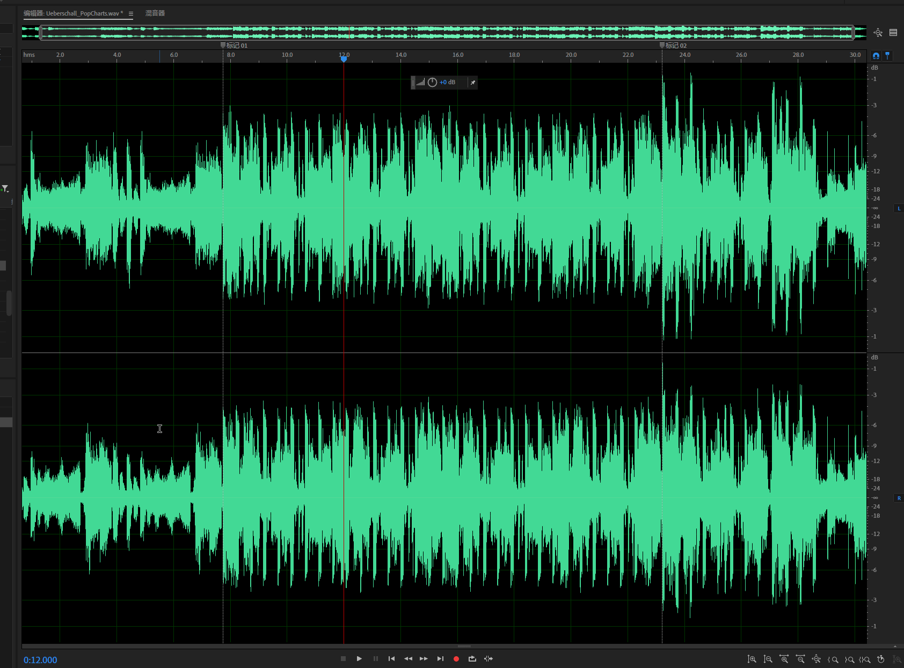
混合粘贴
有时候我们需要在当前音轨粘贴外部的音频文件，此时就要用到混合粘贴的场景。
在复制好一段音频之后，回到待处理的音频界面，通过打开菜单：“编辑>混合粘贴”（快捷键：Ctrl+Shift+V）,打开混合粘贴对话框。
注意，在这张图中，是要从标记02处插入复制的音频片段。
在混合粘贴对话框中：
- 音量区域，可以设置针对剪贴板中的音频和现有的音频音量选项
- 粘贴类型，则是针对当前剪贴板中的音频片段不同的处理选项
- 插入就是在当前选择处插入
- 重叠（混合）：在当前选择处，以相同的剪贴板长度混合覆盖当前音频（注：你可以理解为多轨混缩）。
- 覆盖：就是以相同的长度替换原有音频
- 调制：使复制的音频改变现有的音频的波形，同时还将两个文件混合。（注：老实讲，还不知道这个有什么用，盲猜可能在一些高级的音频效果中可能会用到）
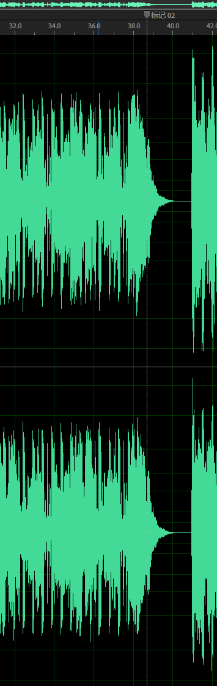
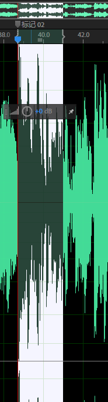
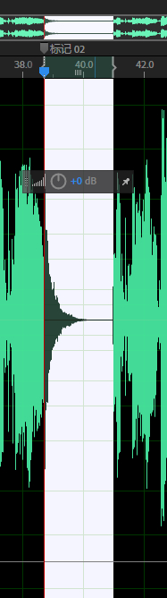
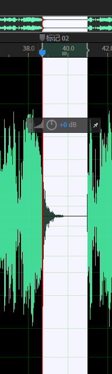
从上面几个操作后的音频图来看，覆盖跟调制很像，但是实际调制的过程比覆盖要跟复杂一点。“调和”过了，而不是单单的覆盖。
在教程中，同样提到了：
调整复制音频与现有音频的混合，是为了避免失真。如果视图将两个音频都以100%或者最大音量混合，必须将每一个音频音量降低至少50%来避免失真，否则混合后的电平将超出可用的最大限值。
重复波形的一部分创建一个循环乐段
许多时候，很多音乐元素都是重复的。循环乐段是一段自身不断重复的乐曲，如鼓节奏等等。
在选取创建循环乐段前，为了方便听取，可以打开传输面板中的“循环播放”按钮，快捷键：Ctrl+L（Loop）
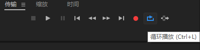
开启后，你就可以选取你想要循环的片段。
选取好之后，你可以通过：
- “编辑>复制到新文件”，快捷键：Ctrl+Alt+C(Shift + Option + C)，来将选区的片段复制到新的编辑器中
- “编辑>另存为”，直接将选区片段另存为文件
- 也可以通过“文件>将选区保存为”，可以立刻将选区保存在独立文件到本地磁盘上
淡入淡出效果
在主编辑区的左右上角，分别有一个小三角的图片，这俩图标分别控制音频的淡入淡出效果。如下图所示：
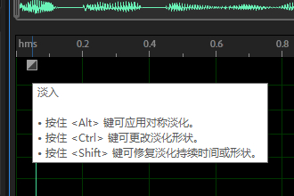
通过拖动改按钮可以改变当前音频的淡入，淡出实现。
信号处理
在信号处理器中，可以有很多种方法使得音频更为“平滑”：音道均衡，动态调整，添加环绕或者特殊效果等。
注：这一章内容中，具体探索多种效果器的实践。是个重点。更多的可能是需要积累不同效果的直观的感受吧，从理论上可能，如果不寻找一些专业资料，可能是搞不懂具体的效果实际能带来感受是什么。最直接的，还是感受。
使用效果组
效果组允许创建一个效果链，可以加载多达16种效果。
增益配置（Gain-staging）效果
有时候，串联多个效果会导致某种程度的频率“叠加”，可能使得电平值超过允许限值。例如，强化中频的滤波器可能使得电平超出可用的范围而导致失真。
如下图所示，就是打开了“参数均衡器效果”，并配置了图中，标记为3的小方块，拖动到顶端之后，也就是中频增益拉到最大后导致的输出失真。
失真的一个直观表现是：在效果组的“输出”仪表的红色过载指示灯会一直闪亮。
解决方法：
- 调整主动增益的范围
- 降低“输入”电平，直到波形的极大值不再触发红色失真指示灯。
调整效果的干声/湿声混合
未经处理的信号为“干声”，添加效果的信号为“湿声”。相对于单纯的“干声”信号或者“湿声”信号，跟多的时候是两者的混合。
上一个小节中提到的两种处理失真信号的方法，这里也可以通过调整干/湿声信号的比重来减弱效果的输出。如下图所示：
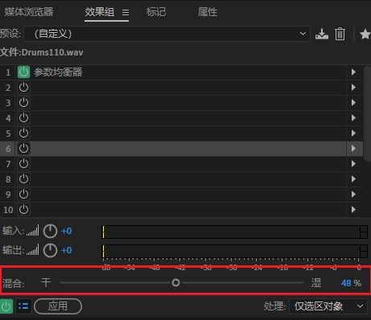
振幅与压限效果
振幅与压限效果可以改变电平或调整动态。
增幅
“增幅”使声音更响亮或更柔和。要通过增加振幅的方式使音频声音变得更大，那么需要选择一个较低放大率，低到是的文件保持不失真。
“增幅”菜单：效果组中的“振幅与压限>增幅”，如下图所示：
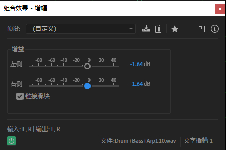
其中“链接滑块”勾选与否，表示是否需要同时改变左右声道的增益，如果不勾选则可以针对左右声道单独调整，反之则是同时变动。
声道混合器
“声道混合器”调整左声道与右声道信号在左右声道的播放量。可用于立体声到单声道的转换，以及对调左右声道的信号。
“声道混合器”菜单：“振幅与压限>声道混合器”
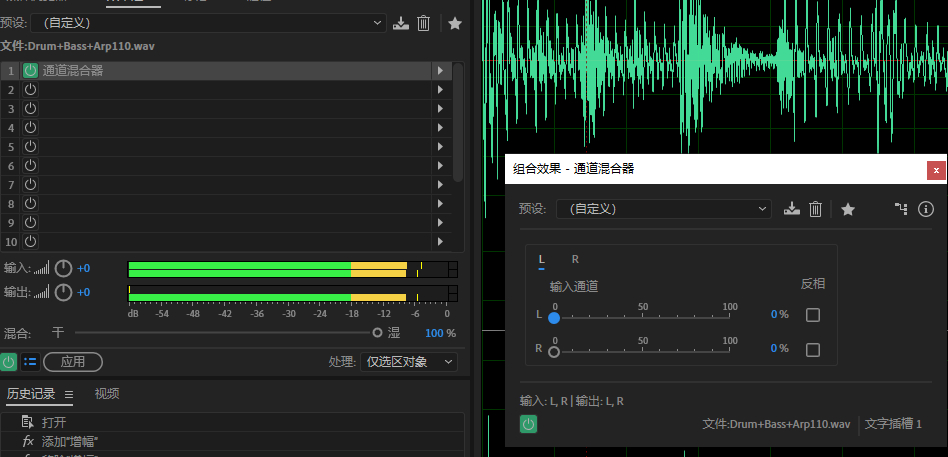
在配置中的一个预设：所有声道50%，这是一个将立体声声道转化为单声道的操作。如下图所示：
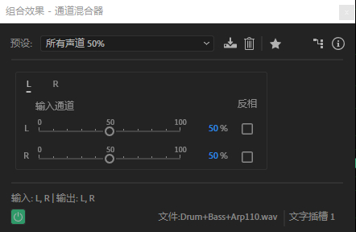
注：在课程中的这个demo：Drum+Bass+Arp110.wav中，很难听出有什么具体实质性的变化。但是可以从下面两个细节观察一下
- 先观察一下原始音频
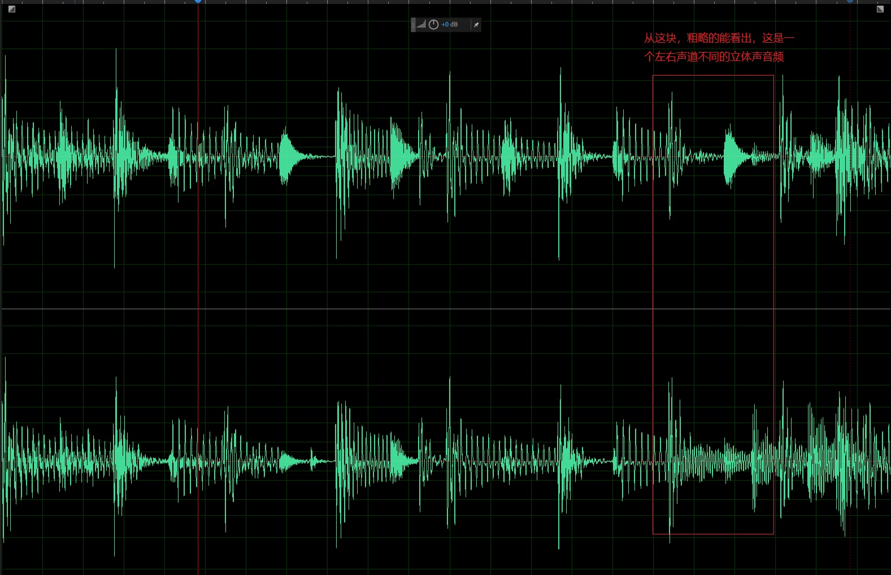
左右声道是不同的 - 当我们通过声道混合器设置所有都50%之后，看一下效果组中“输出”电平，变得一致了，这点也能很明显看出来变成单声道了。看下面两段GIF，设置前后的变化就能看出
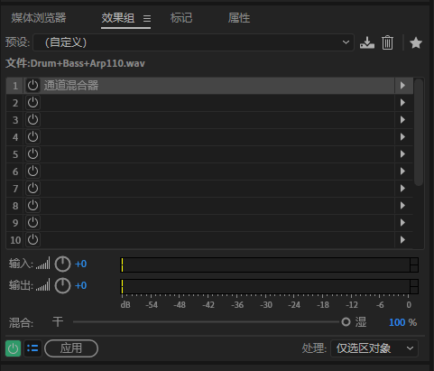
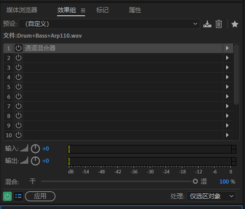
从转换后的“输入”与“输出”两个电平也能直接看出来变化
消除齿音（DeEsser）
消除齿音由三个步骤构成：确定齿音存在的频率，定义范围，然后设定一个阈值，如果齿音超过了阈值，则会自动降低其增益到指定的范围内。使得齿音变得不那么冲突
什么是齿音？
在英语中，例如: “s”, “z”, “ch”, “j” 和 “sh”这些发音[1]，汉语拼音中，例如：zhi、chi、hi、zi、ci、iquo这些发音。这些发音多半会经过舌尖在上门牙和下门牙之间。这些音频的介于2-10kHz不等，取决于个人语音程度。
而在一段音频中，频繁出现这类音，尤其是在使用耳塞或者耳机时，会干扰经过调制的令人愉悦的音频，进而影响整个收听的感受。
那么消除齿音，就是通过某种方法，动态的去解析并最大化消除过度出现的齿音
“消除齿音” 菜单：“振幅与压限>消除齿音”
如下图所示：在这段音频的播放过程中，发现最高峰值达到了-10db（10kHz）左右。这个就表明了，这段音频中，齿音还是很高的。
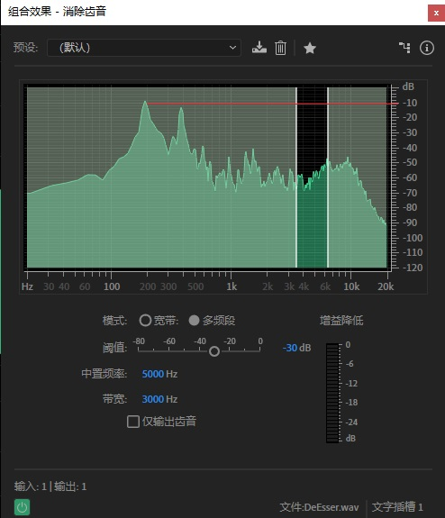
在这个过程中，可以通过降低“阈值”、改变“带宽”后，微调“中置频率”来达到“消除齿音”的效果
注：在实际操作的时候，可能是由于提供的范例并不能完整体现消除齿音后，有多少效果。老实说：我并没有听出来有多少变化。
动态处理
对于一个标准的放大器，其输入与输出之间的关系是线性的。如果增益是1，则输出信号与输入信号相同。如果增益为2，则输出信号的电平是输入信号电平的两倍，无论输入信号电平是多大。
动态处理效果就是改变输入输出的线性关系。
压限与扩展的概念
当输入信号的大幅增加转换为输出信号的小幅增加时，这种变化称为“压限”
当输入信号的小幅增加转换为输出信号的大幅增加时，这种变为称为“扩展”。
两种模式可以同时存在，可以在一个电平区间内扩展信号，在另一个电平区间内压缩信号。
压限器使人们主观上感觉声音更加突出；扩展器用的倒不是很普遍，主要用于放大令人厌恶的低电平信号（如嘶嘶声），进一步降低其电平值。
示例中的一个设置，主要是突出音频中的鼓声听起来，更加有力量，如下图所示：
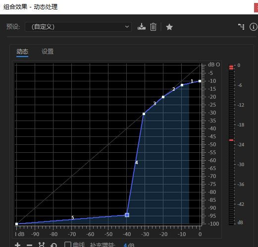
注：这个处理过程，很复杂，现在也就是听个响，大概知道是怎么回事。具体能搞出什么花样，得慢慢实践。
单段压限器
“单段压限器”是一个用于动态区域压缩的“经典”压限器，可用于了解压限器的工作流程。
压限器改变输出信号与输入信号之间的关系。两个最重要的参数是“阈值”（电平高于此值压限器开始工作）和“比例”（用于设置输出信号变化与输入信号变化的关系）。例如：比例为4:1时，4dB的输入增幅产生1dB的输出增幅。
“单段压限器”菜单：“振幅与压限>单频段压限器”
注：太菜，没啥好电平的，找一段音频素材，完了挨个预设效果体验一哈便是。但是有一个效果，表示还真体验到一个场景，预设中的“画外音”，很明显录旁白的时候，如果需要用到BGM，是可以这么做的。
电子管压限器
跟单段类似
多段压限器
“多段压限器”是对单段的一个扩充，将频谱分为四段，每一段都有自己的压限器。因此，可以实现对不同的部分进行不同程度的压缩，例如对低频部分视角较多的压缩，而对中频上半段仅施加适量的压缩。
注：整体配置比较复杂，但是，每段的限制器都提供了S（独奏）的按钮。可以在实践的时候，通过改变预设完了只独奏一段，来体会不同预设之间的差距。
如下面两端GIF所示：一个是默认预设（图中显示成自定义了），另外一种是广播的预设。
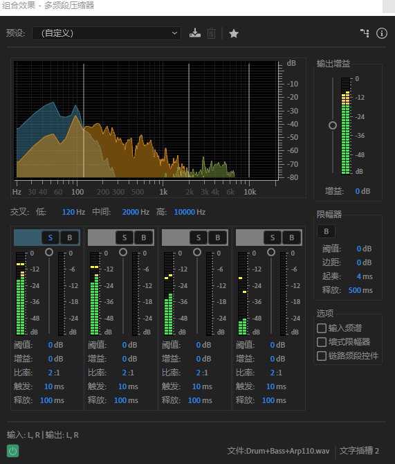
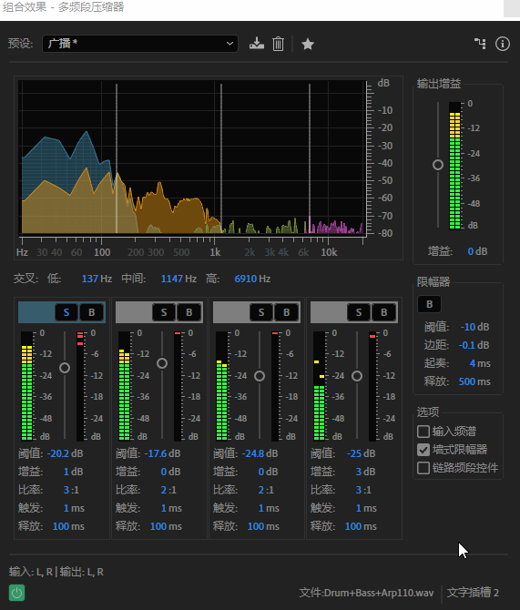
都同时只独奏了低音段的压限器，很明显能感觉到，广播预设在低音这块的增益要比默认强，最明显的感觉就是在广播预设下的低音区，输出要更底，更沉
具体的，必须上手去体验一把就能感受到了
补充
引用
[1] De-essing:[EB/OL]. 2020. https://en.wikipedia.org/wiki/De-essing